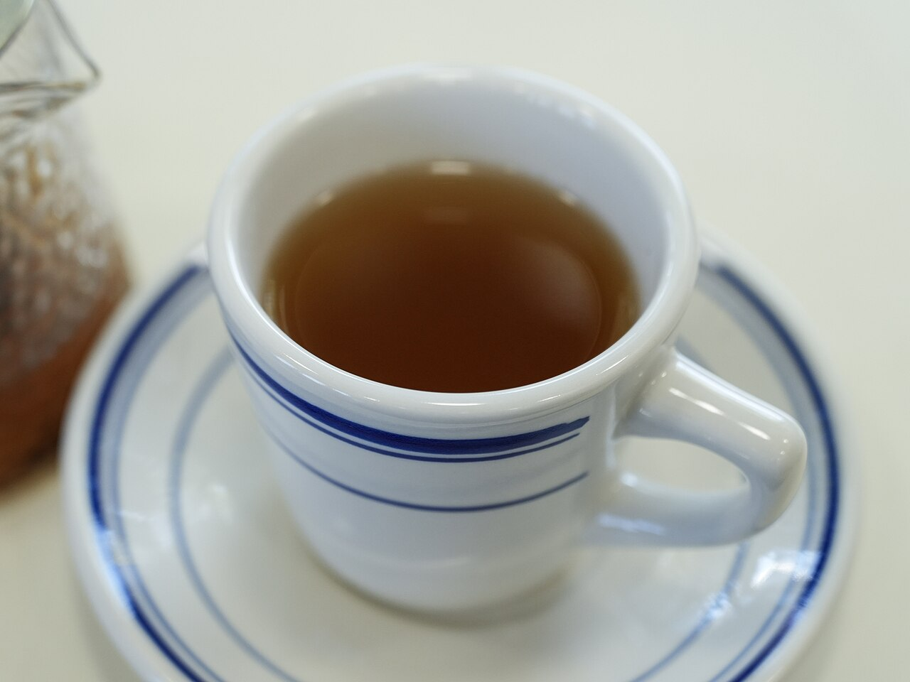
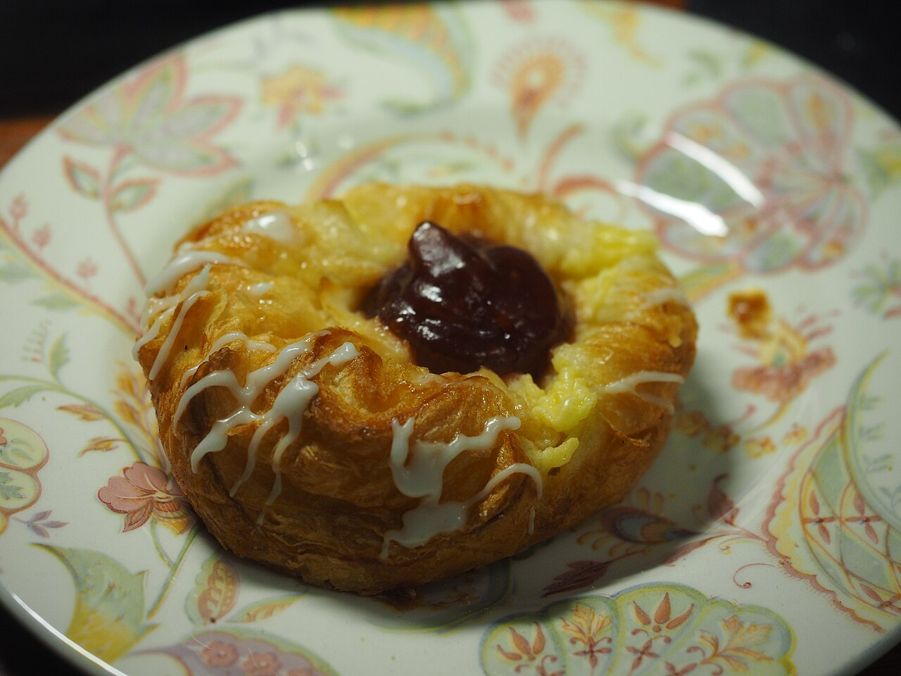

季節のタルト
季節の果物を主役にしたタルト。時季ごとに内容が変わると紹介されています。
価格 準備中松阪市田村町 / CAFE
ふたりの「おうち」で、スイーツと珈琲をふたつ並べて。
KOTIはフィンランド語で「おうち」。もうひとつの我が家のように、ゆっくりどうぞ。

ABOUT
2KOTI(ツーコティ)は、高校の同級生だったふたりが営むカフェです。それぞれ別の大手コーヒー会社で経験を積んだのち、ふたりで開業したと紹介されています。
2020年7月に伊勢市二見町で創業し、2022年9月に松阪市田村町へ移転。珈琲に合うスイーツを自分たちでつくり、スイーツと好みの珈琲の組み合わせを楽しんでもらうことを大切にしているそうです。
お客様にとっての第2の自宅のような、ゆったりした空間を届けたいという思いが込められています。
スイーツと珈琲を組み合わせて楽しむこと、そして2人で始めたお店という決意を表しています。

店名の由来・沿革は掲載記事(ケンセラ、2023年10月公開)に基づきます。内容は変わっている場合があります。
MENU
掲載記事などで紹介されていた内容です。実際のメニュー・価格・提供状況は変わることがあるため、詳細は準備中とし、最新はInstagramでご確認ください。
季節の果物を主役にしたタルト。時季ごとに内容が変わると紹介されています。
価格 準備中
珈琲に合うよう考えられた、ケーキやパウンドケーキなど。
価格 準備中
看板として紹介されているシュークリームと、カップで楽しむシュー。
価格 準備中
カフェラテ、チョコレートラテ、抹茶ミルクなど。
価格 準備中
3種類の煎り具合から、スイーツに合わせて選べると紹介されています。
価格 準備中
紅茶や、季節の果物の自家製エードなど。
価格 準備中営業時間・定休日・価格・予約・お支払い方法: 準備中。電話番号: 準備中。



VOICE
珈琲とタルトを選ぶ時間が、もうたのしいです。ひと口ごとに合わせ方を考えたくなりそう。
ご来店のお客様(想像)友だちと行って、ふたりで別々のスイーツを分け合いたくなる雰囲気。「おうち」みたいにほっとできそうです。
ご来店のお客様(想像)浅煎りと深煎りで迷いそう。お店の方におすすめの組み合わせを聞いてみたいです。
ご来店のお客様(想像)上記は制作側が創作したイメージ例であり、実在のお客様の声ではありません。
ACCESS
掲載写真はフリー素材のイメージで、店舗の実際の様子・メニューではありません。